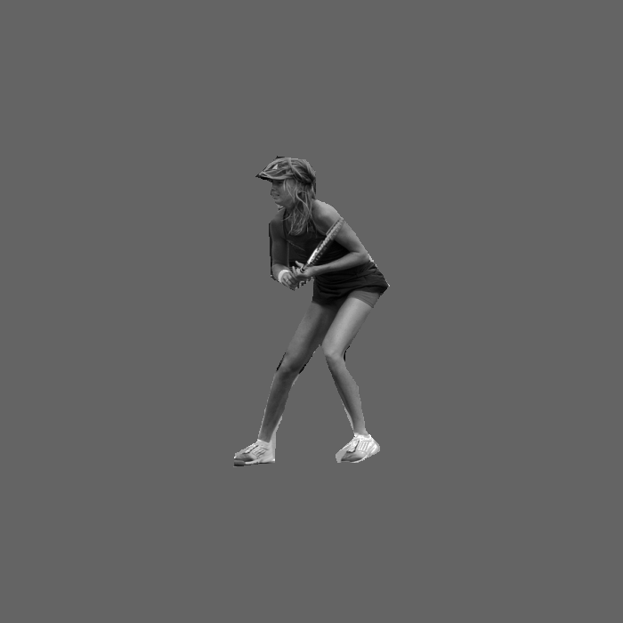
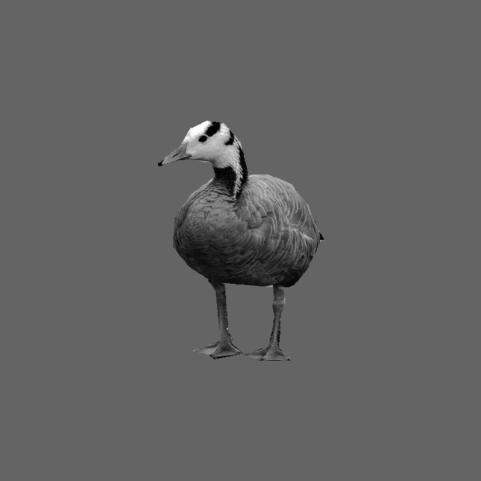

<!DOCTYPE html>
<html>
  <head>
    <title>My experiment</title>
    <script src="jspsych/jspsych.js"></script>
    <script src="img_stimuli.js"></script>
    <script src="shuffle_array.js"></script>  <!-- add the function that will shuffle correct answer-->
    <script src="jspsych/plugin-html-keyboard-response.js"></script>
    <script src="jspsych/plugin-image-keyboard-response.js"></script> 
    <script src="jspsych/plugin-preload.js"></script>
    <link href="https://unpkg.com/jspsych@7.3.0/css/jspsych.css" rel="stylesheet" type="text/css" />
    <style>
        /* adding the style to align model images at the bottom */
        .div-wrapper { 
            position: relative;
            height: 200px;
            width: 300px;
        }
        .div-wrapper img {
            position: absolute;
            left: 0;
            bottom: 0;
        }
    </style>
  </head>
  <body></body>
  <script>


    var jsPsych = initJsPsych({
        default_iti: 500,
        // here we declare within the initialization that we want this function to run at the end
        on_finish: function(){
            jsPsych.data.displayData(); //this is useful for directly debugging, probably not for real
        }
    });

    var timeline = [];

    // var preload = {
    //     type: jsPsychPreload,
    //     imaegs: filename
    // }

    // var preload = {
    //     type: jsPsychPreload,
    //     auto_preload: true
    // };
    // timeline.push(preload)

    // Declare the correct answers
    var ans_array = shuffle(['q', 's', 'd', 'f', 'j', 'k', 'l', 'm']); // list the possible answers with azerty keyboard
    var corr_keys = {
        banana: ans_array[0],
        firehydrant: ans_array[1],
        bird: ans_array[2],
        building: ans_array[3],
        cat: ans_array[4],
        bus: ans_array[5],
        person: ans_array[6],
        tree: ans_array[7]
    }

    var welcome = {
        type: jsPsychHtmlKeyboardResponse,
        stimulus: "Welcome to the experiment. Press any key to begin.",
        post_trial_gap: 0
    };
    timeline.push(welcome);

    var instructions_1 = {
        type: jsPsychHtmlKeyboardResponse,
        stimulus: `
        <h2> <b> Welcome! </b> </h2>
        <p> In this experiment, you will have to classify pictures based on the object they contain.</p>
        <p> Indicate to which category the object in the image belongs to <em>as fast as possible</em>.</p>
        <p> Objects will belong to one of eight possible categories:
            <br><b><i>People</i></b>
            <br><b><i>Cats</i></b>
            <br><b><i>Birds</i></b>
            <br><b><i>Bananas</i></b>
            <br><b><i>Fire hydrants</i></b>
            <br><b><i>Buses</i></b>
            <br><b><i>Buildings</i></b>
            <br><b><i>Trees</i></b>
        </p>
        <p> Here are some example images from each category: </p>
        <div>
         
         
         
        
        </div>
        <div>
            
            
            
            
        </div>
        <br><br>
        <p><i>Press any key to continue instructions.</i></p>
        `,
        post_trial_gap: 0
    };
    timeline.push(instructions_1)

    var banana = "banana"

    var instructions_2 = {
        type: jsPsychHtmlKeyboardResponse,
        // stimulus: ["text here", ans_array[0]],
        stimulus:`
            <p> Use the keyboard to classify images as fast as you can. Take some time to remember the keys and place your fingers. </p>
            <p> Press the following keys to respond: </p>
            <p style='text-align:center;'>
                <br>Press <b style="text-transform:uppercase;">${ans_array[0]} </b> for <b>bananas</b>
                <br>Press <b style="text-transform:uppercase;">${ans_array[1]} </b> for <b>fire hydrants</b>
                <br>Press <b style="text-transform:uppercase;">${ans_array[2]} </b> for <b>birds</b>
                <br>Press <b style="text-transform:uppercase;">${ans_array[3]} </b> for <b>buildings</b>
                <br>Press <b style="text-transform:uppercase;">${ans_array[4]} </b> for <b>cats</b>
                <br>Press <b style="text-transform:uppercase;">${ans_array[5]} </b> for <b>buses</b>
                <br>Press <b style="text-transform:uppercase;">${ans_array[6]} </b> for <b>people</b>
                <br>Press <b style="text-transform:uppercase;">${ans_array[7]} </b> for <b>trees</b>
            </p
        <p> This reminder will be displayed at the bottom of the screen to help you:
        <div></div>
        <b style:"text-transform:uppercase;">${ans_array}</b>
        <br><br>
        <p><i>Press any key to begin the experiment</i>.</p>
        `,
        post_trial_gap: 0
    };
    timeline.push(instructions_2)

    var trial_count = 0

    var break_trial = {
        type: jsPsychHtmlKeyboardResponse,
        stimulus: `
        <p> Take a short break. Press <b>C</b> to continue. </p>
        `,
        choices: 'c'
    }

    var break_conditional = {
        timeline: [break_trial],
        conditional_function: function() {
            // increment trial count - in first run through the timeline variables procedure, trial_count will be equal to 1
            trial_count++;
            if (trial_count % 10 == 0) {
            // if the trial count is divisible by 96, then run the break trial
            return true;
            } else {
            // otherwise skip the break trial
            return false;
            }
        }
    };

    var fixation = {
        type: jsPsychHtmlKeyboardResponse,
        stimulus: '+',
        // stimulus: `  `,
        choices: "NO_KEYS",
        trial_duration: 500,
        data: 'fixation',
        post_trial_gap: 0,
        trial_duration:500
    };

    // adding a randomly long blank interval before image presentation
    var jitter = {
        type: jsPsychHtmlKeyboardResponse,
        stimulus: '',
        choices: "NO_KEYS", //specifies that no keyboard answer will be accepted
        trial_duration: function(){
            return jsPsych.randomization.sampleWithoutReplacement([0, 25, 50, 75, 100, 125, 150, 175, 200, 225, 250, 275, 300], 1)[0];
        }, // this function picks up one duration value at random
        data: 'fixation' // here we tag the fixation with a relevant name, useful to remove its data later
    };

    var classification_trial = {
        type: jsPsychImageKeyboardResponse,
        stimulus: jsPsych.timelineVariable('filename'),
        prompt: `
        <div class="div-wrapper"></div>
        <b style="text-transform:uppercase;">${ans_array[1]} </b>
        `,
        choices: ['q', 's', 'd', 'f', 'j', 'k', 'l', 'm'],
        data: {
            task: 'response',
            category: jsPsych.timelineVariable('category'),
            manipulation: jsPsych.timelineVariable('manipulation')
        },
        on_finish: function(data){ //this function calculates online whether the answer is correct or not
            data.correct_response = corr_keys[jsPsych.timelineVariable('category')];
            data.correct = jsPsych.pluginAPI.compareKeys(data.response, data.correct_response);
        },
        trial_duration: 10000,
        stimulus_duration: 150
    };
    
    var classification_procedure = {
        timeline: [break_conditional, fixation, jitter, classification_trial],
        timeline_variables: img_stimuli,
        // repetitions: 2,
        randomize_order: true
    };

    timeline.push(classification_procedure)

    var end_message = {
        type: jsPsychHtmlKeyboardResponse,
        stimulus: `
        <p> Thank you for taking part, the experiment is now over!</p>
        <p> Press any key to finish.</p>
        `,
        post_trial_gap: 500
    };
    timeline.push(end_message);


    jsPsych.run(timeline);

    </script>
    </html>